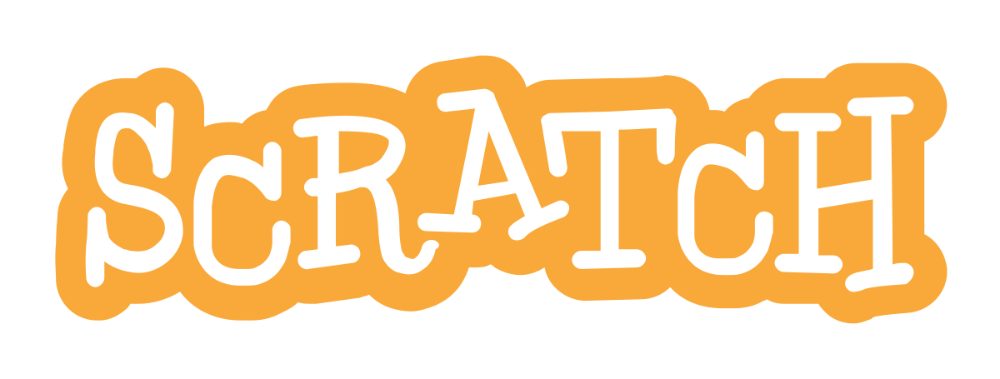

About Fath
Fath11 is a teenager who is very passionate about coding and wants to spread it to everyone.
Fath11 was first introduced to Scratch at eight and would later make an account at ten during the pandemic. The COVID-19 pandemic is when the journey started because Fath11 would spend the entire pandemic learning Scratch and make more than 100 games in three years!
Fath11 would also join a collab in Scratch called Devtech OS and later lead the team. That was the first time he was exposed to the world of leadership, and he realized what impact he could have on the planet.
His journey would later be slowed down after the pandemic ended, but his passion for coding is still deep in his heart. On March 11 2022, he created his own YouTube channel but will only upload a video on January 02 2023.

Fath11 wants to continue game-making and learn other game engines, so he quit Scratch. He met progress one day; he discovered Gandi IDE on his YouTube recommendation page. On December 12 2022, he joined the official Gandi IDE Discord server. Fath11 would later be an active member there and a moderator, host a Scratch Game Jam(SGJ) and more.
While on the server, he wants to help people learn Gandi IDE but is also looking for what his purpose might genuinely be. He is still unsure, but he knows that his future job must be about coding.